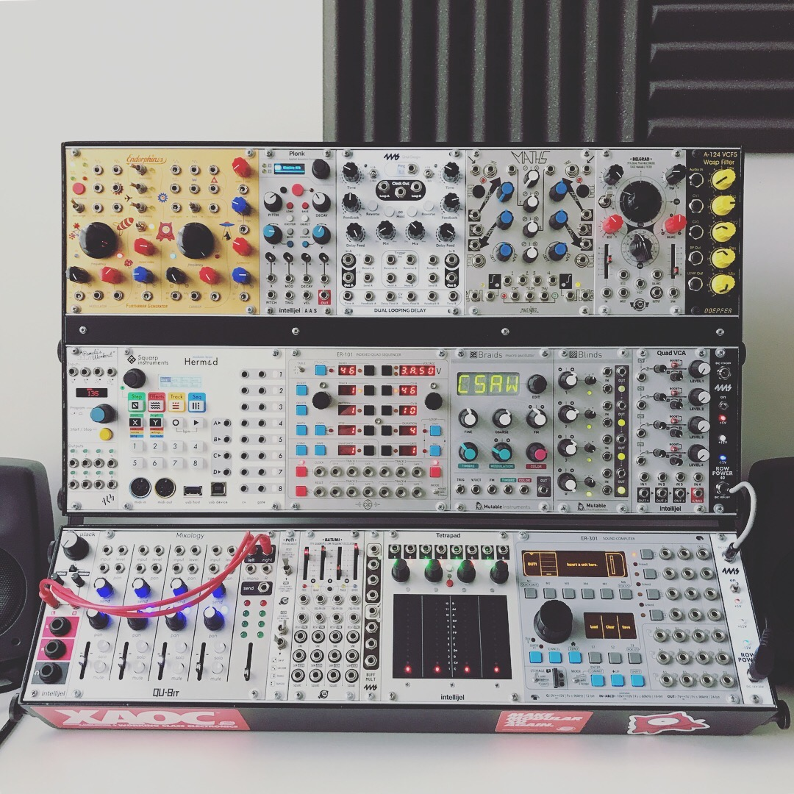
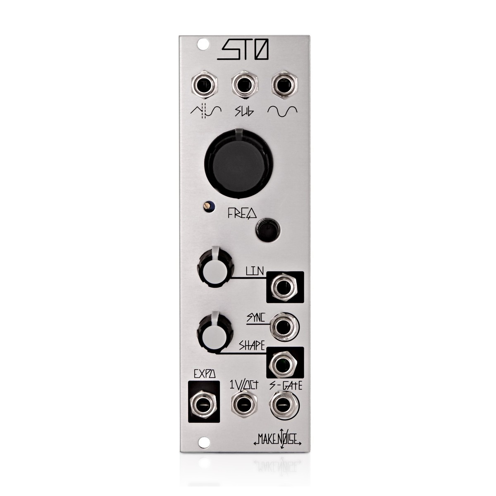

What's modular synthesis?
A modular synthesizer is an electronic instrument. A single module generally does a single job – using electronic components to either produce a sound or shape it in some way. When you combine several modules together, you can create a complete synthesizer and build your own instrument unlike anything else - the possibilites are infinite. One of my favourite things about modular synthesis is that changing one parameter can completely change the entire sound of the patch. Patching is the process of connecting the different modules together.
Here's a picture of a Eurorack with a fresh patch. How does this even work?
Each module does it's own job. the basic formula for a patch starts with a VCO, or voltage controlled operator. This is the key module for generating sound. in basic terms, an oscillator is a waveform generated by a control voltage, or CV, with the pitch rising and falling as the voltage increases or decreases. A modular system can incorporate any number of oscillators, though in the case of non-modular hardware synths, we often see two or three. And that's just one type of module. Big patches typically include such modules as, MIDI to CV generators, filters, envelopes, modulators, mixers, sequencers, effects and output modules. The list goes on.
Here's an example of a VCO module. Here's a youtube video demonstrating a generative ambient patch, made by me.